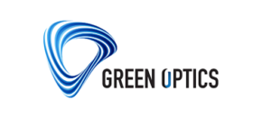
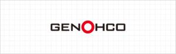
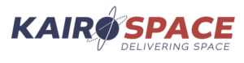

SM TECH
회사소개
인사말
경영 이념 & 목표
회사연혁
주요인증
조직도
오시는길
사업영역
사업소개
주요 고객사
제품소개
방산부문
항공/기타
위성
설비 현황
설비 현황
계측기
제작 공정
고객지원
공지사항
고객 문의
문의하기 →
HOME
/ 사업영역 /
주요 고객사
Trusted by
Industry Leaders
대한민국 방산·우주·항공 주력 기업 및 정부 연구기관과의 장기 파트너십을 이어오고 있습니다.
K1A1 / K2 / K21 / K9 / KSAM 등 육상 장비
정밀구조물
FA-50 / KUH / LAH 등 항공장비
정밀구조물
아리랑위성 (COMPAST) EOS
정밀구조물
수출 위성 개발
정밀구조물 및 SUBASSY · UAE(Dubai), Spain, Singapore, Malaysia 등
정부과제 위성 개발
군집 / MRSS / SDRS 정밀구조물
사단 무인 항공기 지상장비
콘솔, 통합처리장치
425 위성 지상장비
통합처리장치
정부과제 위성개발
정밀구조물 · 위성 EO카메라 광학부품 국산화
SaTReC
인공위성연구소 · KAIST
한국과학기술원(KAIST) 인공위성연구센터
정부과제 위성개발 · 정밀구조물
과학위성 1,2호 / 나로호 · 차세대 소형 위성 1/2호 (누리호)
위성 부품 특수소재 가공
정부과제 위성개발 · 정밀구조물
Gamma Ray Detector — 달 탐사 다누리호 탑재 · 환경 시험 전용 치공구 제작
정부과제 위성개발 · 정밀구조물
NISS (NEXTSat-1 탑재), 누리호 큐브 위성 구조물
천문대 유지 보수 부품 제작
수출 위성 구조물 및 조립체 정밀 제작 공급
구조물 단독 수주 수출 · Dubaisat 위성 1,2호 구조물 제작(쎄트렉아이) · KHS 위성, 달탐사로버 구조물 제작

방산 정밀 기계 부품 가공
광학 정밀 기계 부품 가공
대구경 관측경


위성 정밀 부품 제작